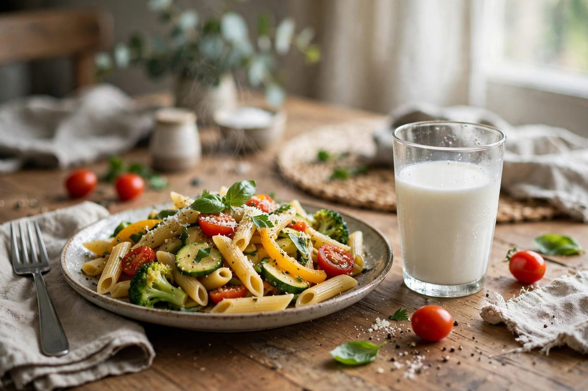

How Many Calories to Gain Weight
How to set a calorie surplus for healthy weight gain, what to eat, and how to make sure the gain is mostly muscle.
Gaining weight in a healthy way means eating more calories than you burn, but doing it with nutrient-rich food and strength training so the gain is mostly muscle rather than fat. It is a common goal for people who are underweight, for athletes building muscle, and for anyone recovering from illness. This guide explains how to calculate a surplus, what to eat, and how to track progress.
Start from your maintenance calories
First find your total daily energy expenditure, or TDEE, the calories that keep your weight steady. A moderately active 25-year-old man weighing 60 kg and 175 cm tall might have a TDEE of about 2,300 calories a day. To gain weight, eat above that number. A surplus of about 300 to 500 calories a day is the usual starting point, producing roughly 0.25 to 0.5 kg of gain per week. Larger surpluses gain weight faster, but more of it will be fat, so a moderate surplus is usually the better trade-off.
What to eat for a surplus
The easiest way to add calories is to add energy-dense, nutritious foods rather than junk. Nuts, seeds, nut butters, olive oil, avocados, dried fruit, whole milk, cheese, eggs, and starchy foods such as rice, oats and potatoes all add calories without huge volumes. Liquid calories help too: a smoothie with milk, oats, banana and peanut butter can add 400 to 600 calories and is easier to finish than another plate of food. Aim for protein of about 1.6 grams per kilogram of body weight a day if you are training, because protein is what builds muscle.
Training matters more than eating alone
Eating a surplus without training mostly adds fat. Strength training two to four times a week gives the extra calories somewhere useful to go: muscle. Focus on the big compound movements, such as squats, deadlifts, presses and rows, and increase the weight or repetitions gradually over weeks. Sleep matters too, because muscle is built during recovery. Without training, a surplus is just overeating; with training, it is a muscle-building plan.
Tracking your gain
Weigh yourself two or three times a week, at the same time and in the same conditions, and look at the weekly average. Aim for a gain of about 0.25 to 0.5 kg per week. If nothing changes after two weeks, add another 200 calories a day. If you are gaining faster than 0.5 kg a week, trim the surplus slightly, because the extra is likely to be fat. Also track your strength: if your lifts are going up, the gain is probably going where you want it.
When gaining weight is difficult
Some people find it genuinely hard to eat enough, because they feel full quickly or have a small appetite. Eating more often helps: three meals plus two or three snacks, rather than three large meals. Do not fill up on water before meals, and choose calorie-dense foods over bulky low-calorie ones. If you are underweight and cannot gain despite eating more, or if weight loss was unintentional, see a doctor, because it can occasionally signal a health problem that needs attention.
A worked example for gaining weight
Take a 25-year-old man weighing 60 kg and 175 cm tall, with a TDEE of about 2,300 calories. He aims for 2,700 calories a day, a surplus of 400, and trains with weights three times a week. After a month he is 61.5 kg, after three months about 64 kg, and after six months about 67 kg, a gain of 7 kg, most of it muscle if his lifts are rising. His daily food is simple: oats, milk, banana and peanut butter for breakfast, chicken and rice for lunch, pasta with meat sauce for dinner, and nuts and yoghurt as snacks. If the scales stall for two weeks, he adds 200 calories, usually as a smoothie. The plan is deliberately boring, because a boring plan is one you can repeat for six months.
Frequently Asked Questions
How many extra calories do I need to gain weight?
About 300 to 500 above your maintenance calories a day, for roughly 0.25 to 0.5 kg of gain per week.
What should I eat to gain weight healthily?
Energy-dense nutritious foods: nuts, nut butters, olive oil, avocados, whole milk, eggs, rice, oats and potatoes, plus enough protein.
Will I just gain fat?
Not if you strength train two to four times a week. Training directs the surplus into muscle; without it, most of the gain is fat.